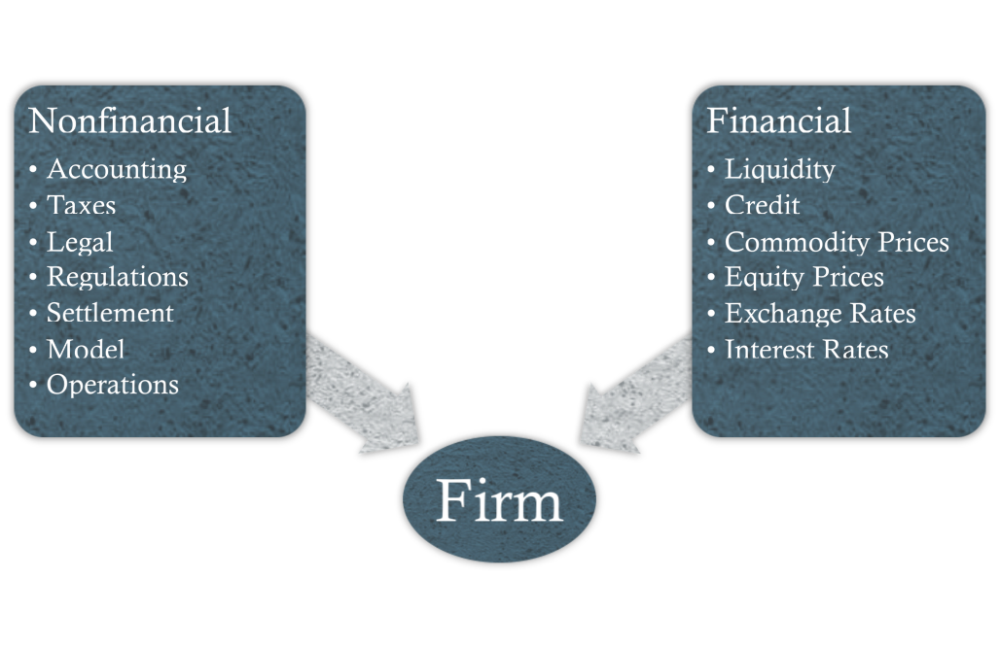
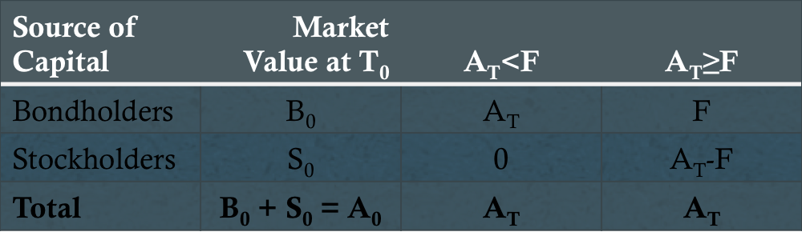
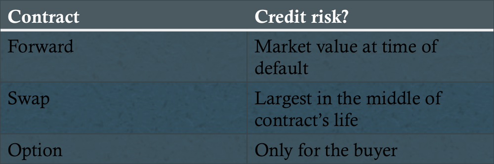
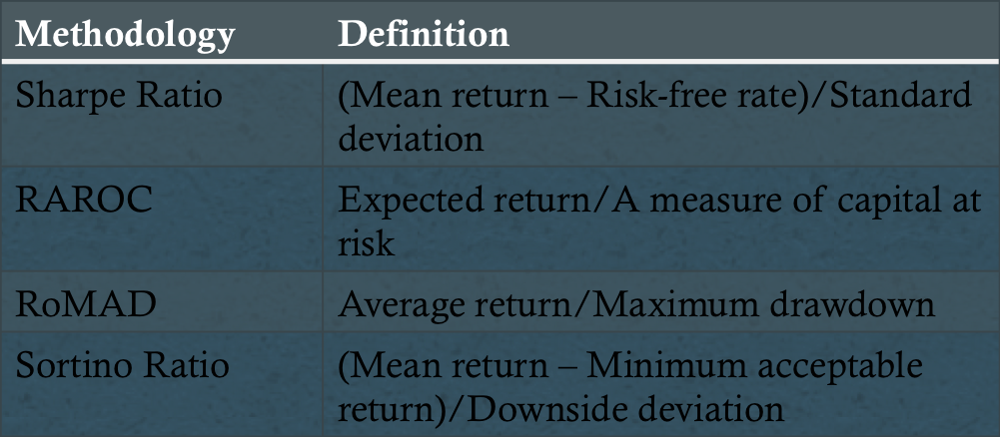

Introduction
Definition: A process involving the:
- Identification of exposures to risk
- Establishment of appropriate ranges for exposures
- Continuous measuresment of these exposures
- Appropriate adjustment of exposure levels in response to breaches of target ranges
Risk Governance
- Centralized vs. decentralized
- Identify risk factor exposures
- Quantify size of exposures
- Map risk factor inputs into a risk estimation calculation
- Identify overall risk factor exposures and contributions to overall risk
- Establish reporting process
- Monitor compliance
Step 1: Identify Risks

Financial Risks
- Market risk
- Credit risk
- Liquidity risk
Nonfinancial Risks
- Operational risk
- Model risk
- Settlement risk
- Regulatory risk
- Legal/contract risk
- Tax risk
- Accounting risk
- Sovereign risk
- Political risk
- Other risks
Step 2: Measuring Risk
- Market risk
- Volatility (active risk/tracking risk)
- Beta/duration/delta
- Convexity/gamma
- Vega/theta
Value at Risk (VaR)
Definition: An estimate of the loss (in $ terms) that is expected to be exceeded with a given level of probability over a specified time period
- Measure of minimum loss
- "There is a 5% chance the portfolio losses will be at least $3.5MM in a single week."
VaR Estimation Methodologies
- Analytical/variance-covariance method
- 5% yearly VaR: (μ - 1.65σ) × Market Value
- 1% weekly VaR: (μ/52 - 2.33(σ/√52) × Market Value
- Historical simulation method
- Monte Carlo simulation method
Comparison of Methodologies

Advantages/Limitations
- Advantages
- Simple/intuitive
- Accepted by regulatory bodies
- Versatile
- Limitations
- Difficult to estimate
- Different methodologies yield different results
- False sense of security
- Underestimates magnitude and frequency of worst returns
- Not subadditive
VaR Extensions/Supplements
- Incremental value at risk (IVaR)
- Cash flow at risk (CFaR)
- Tail value at risk (TVaR)
Stress Testing
- Identifies unusual circumstances that couuld lead to excess losses
- Natural complement to VaR
- Scenario analysis
- Process of evaluating a portfolio under different states of the world
- Key variable changes, stylized scenarios, historical and hypothetical extreme events
- Stress tests
- Factor push, maximum loss optimization, worst-case scenario analysis
Measuring Credit Risk
- Two-dimensional
- Default-rate (likelihood of loss)
- Recovery rate (magnitude of loss)
- Current vs. potential credit risk
- Cross-default provision
- Credit VaR
Option-Pricing Theory
X/(1+r)T = p0+S0-c0

Credit Risk and Derivatives

Step 3: Managing Risk (Market Risk)
Set risk tolerance levels and adjust behavior to be consistent with such levels
- Risk budgeting
- Total risk = sum of risk budgets - diversification effect
Managing Credit Risk
- Counterparty exposure limits
- Marking to market
- Collateral posting provisions
- Payment netting
- Minimum credit standards
- Credit derivatives
Performance Evaluation

Capital Allocation
- Nominal, notional, or monetary position limits
- VaR-based position limits
- Maximum loss limits
- Internal capital requirements
- Regulatory capital requirements